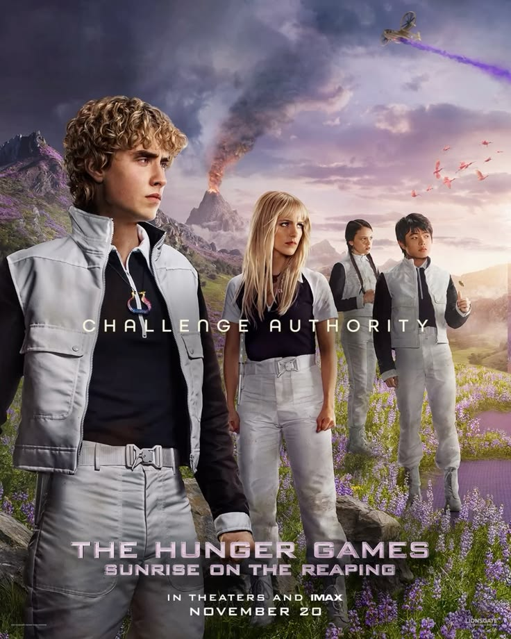
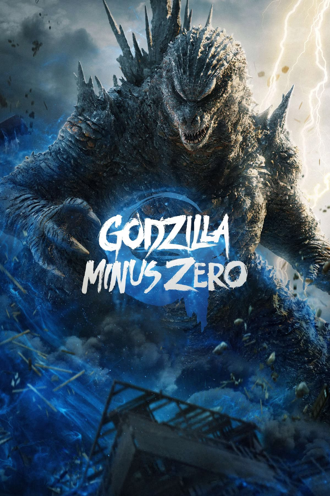
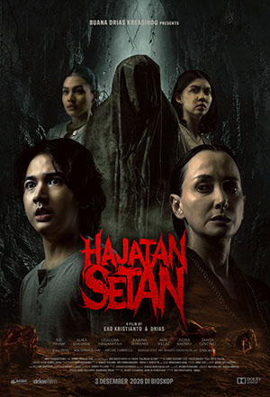

20 Nov 2026
R13+

The Hunger Games: Sunrise on the Reaping
Action, Adventure • 2j 38m • Sutradara: Francis Lawrence
Daftar film yang sedang tayang di bioskop KeyWatch. Klik poster untuk membaca sinopsisnya.

Action, Adventure • 2j 38m • Sutradara: Francis Lawrence

Sci-Fi, Adventure • 2j 15m • Sutradara: Takashi Yamazaki

Romance, Drama • 2j 19m • Sutradara: Yukiko Sode

Animation, Adventure, Comedy • 1j 47m • Sutradara: Alessandro Carloni dan Erica Rivinoja

Horror, Mystery • 1j 39m • Sutradara: Bambang Drias dan Eko Kristianto
Sinopsis lengkap film akan muncul di sini.